微信公众号[深容Pubmed文献检索] 1. 此处右键：选菜单【翻成中文（简体）】 2. 翻译后，此处右键：选菜单【打印...】成PDF格式
建议屏幕分辨率：1920X1080；如果屏幕太小，可以按Ctrl + 或 Ctrl -缩放网页。

Software Construction
Chapter 7: Software Construction for
Robustness
7.5 Testing and Test-First
Programming
Xu Hanchuan
xhc@hit.edu.cn
March 10, 2019

Outline
7.5 Testing and Test-First Programming
▪ Introduction to Software Testing
▪ Test Case
▪ Test-First Programming
▪ Unit Testing
▪ Automated Unit Testing with JUnit
▪ Black-box Testing
– Choosing Test Cases by Partitioning
– Include Boundaries in the Partition


Outline
7.5 Testing and Test-First Programming
▪ White-box Testing
▪ Coverage of Testing
▪ Integration Testing
▪ Automated Testing and Regression Testing
▪ Documenting Your Testing Strategy
▪ Summary
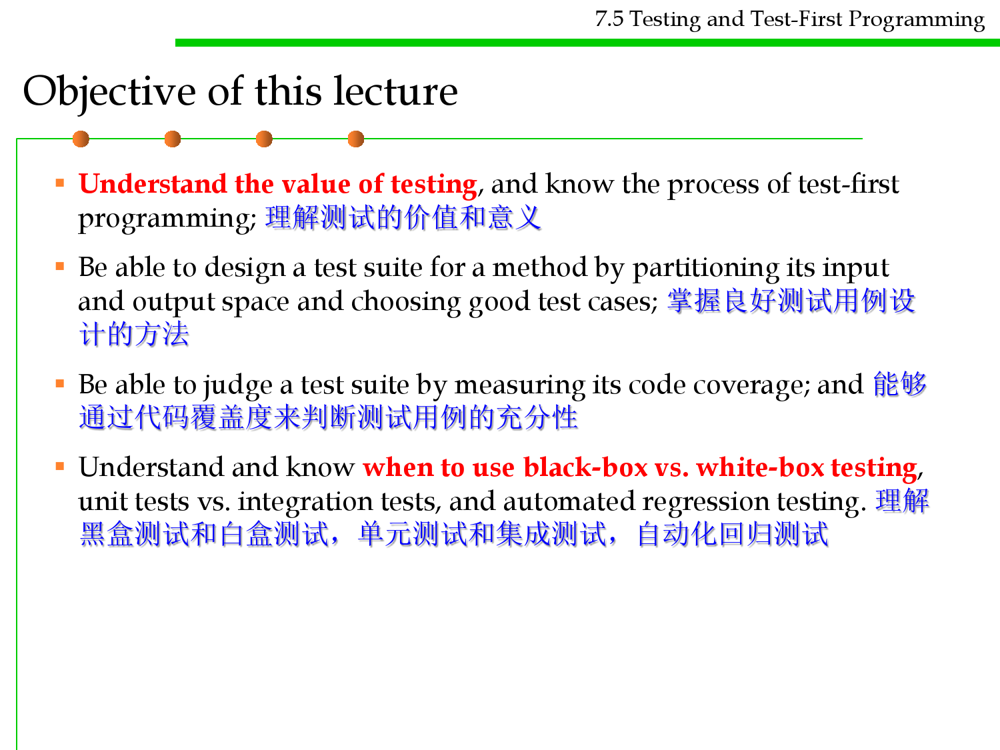
Objective of this lecture
7.5 Testing and Test-First Programming
▪ Understand the value of testing, and know the process of test-first
programming; 理解测试的价值和意义
▪ Be able to design a test suite for a method by partitioning its input
and output space and choosing good test cases; 掌握良好测试用例设
计的方法
▪ Be able to judge a test suite by measuring its code coverage; and 能够
通过代码覆盖度来判断测试用例的充分性
▪ Understand and know when to use black-box vs. white-box testing,
unit tests vs. integration tests, and automated regression testing. 理解
黑盒测试和白盒测试，单元测试和集成测试，自动化回归测试


Software Construction
1 Introduction to Software Testing
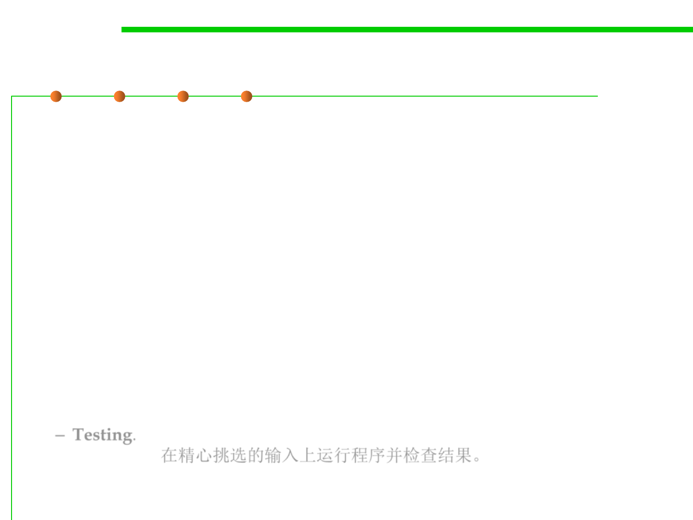 
Software Validation
7.5 Testing and Test-First Programming
▪ Testing is an example of a more general process called validation.
▪ The purpose of validation is to uncover problems in a program and
thereby increase your confidence in the program’s correctness.
▪ Validation includes:
– Formal reasoning(形式化推理) about a program, usually called verification.
Verification constructs a formal proof that a program is correct.
Verification is tedious to do by hand, and automated tool support for
verification is still an active area of research. (out of scope of this course)
– Code review(代码评审) Having somebody else carefully read your code,
and reason informally about it, can be a good way to uncover bugs. It’s
much like having somebody else proofread an essay you have written. (to
be discussed in Chapter 9)
– Testing. Running the program on carefully selected inputs and checking
the results. 在精心挑选的输入上运行程序并检查结果。
Software Validation
7.5 Testing and Test-First Programming
▪ Even with the best validation, it’s very hard to achieve perfect quality
in software.即使有最好的验证，也很难在软件中达到完美的质量。
▪ Here are some typical residual defect rates (bugs left over after the
software has shipped 残留缺陷率) per kloc (one thousand lines of
source code):
– 1 - 10 defects/kloc: Typical industry software(行业软件)
– 0.1 - 1 defects/kloc: High-quality validation 高质量验证的软件(E.g., the Java
libraries might achieve this level of correctness.)
– 0.01 - 0.1 defects/kloc: The very best, safety-critical validation. 安全攸关的软
件(E.g., NASA and companies like Praxis can achieve this level.)
▪ This can be discouraging for large systems. For example, if you have
shipped a million lines of typical industry source code (1 defect/kloc),
it means you missed 1000 bugs!

What is testing?
7.5 Testing and Test-First Programming
▪ Software testing is an investigation conducted to provide
stakeholders with information about the quality of the product or
service under test. 软件测试是一项调查，旨在为利益相关者提供有关
被测产品或服务质量的信息。
▪ Test techniques include the process of executing a program or
application with the intent of finding software bugs (errors or other
defects), and verifying that the software product is fit for use.
▪ Software testing involves the execution of a software component or
system component to evaluate one or more properties of interest.评
估一个或多个感兴趣的属性

What is testing?
7.5 Testing and Test-First Programming
▪ In general, these properties indicate the extent to which the
component or system under test:
– Meets the requirements that guided its design and development
→correctness
– Responds correctly to all kinds of inputs →correctness, robustness
– Performs its functions within an acceptable time →correctness
– Is sufficiently usable →correctness, robustness
– Can be installed and run in its intended environments →correctness
– Achieves the general result its stakeholders desire →correctness
Test Characteristics
7.5 Testing and Test-First Programming
▪ Testing’s goal runs counter to the goals of other development
activities. The goal is to find errors.测试的目标与其他开发活动的目标
相反，测试的目标是找到错误。
▪ Testing can never completely prove the absence of errors.
▪ Testing by itself does not improve software quality.
▪ Testing requires you to assume that you’ll find errors in your code.
▪ A good test has a high probability of finding an error 高概率发现错误
▪ A good test is not redundant 不冗余
▪ A good test should be “best of breed” 多种方案中最好的
▪ A good test should be neither too simple nor too complex 不简单也不
复杂

Testing levels
7.5 Testing and Test-First Programming
▪ Unit testing(单元测试): refers to tests that verify the functionality of
a specific section of code, usually at the function level (in OO: class
level).
▪ Integration testing(集成测试): the combined execution of two or
more classes, packages, components, subsystems that have been
created by multiple programmers or programming teams.
▪ System testing(系统测试): to test a completely integrated system to
verify that the system meets its requirements, which executes the
software in its final configuration.
Regression
testing
Unit
testing
function/class
Integration
testing
classes/packages
/components/subsystems
System
testing
system
Testing strategy and process
7.5 Testing and Test-First Programming
▪ Testing strategy
Testing strategy
Testing proces

Other testing types
7.5 Testing and Test-First Programming
▪ Installation testing
▪ Compatibility testing
▪ Smoke and sanity testing(冒烟测试和可用性测试)
▪ Regression testing
The whole topic of testing is much larger
than the subject of testing during
▪ Acceptance testing
software construction.
▪ Alpha testing
Other topics for test specialists can be
studied in other “software engineering”
▪ Beta testing
related courses.
▪ Performance/load/scalability testing
▪ Usability testing
▪ Accessibility testing
▪ Security testing
▪…
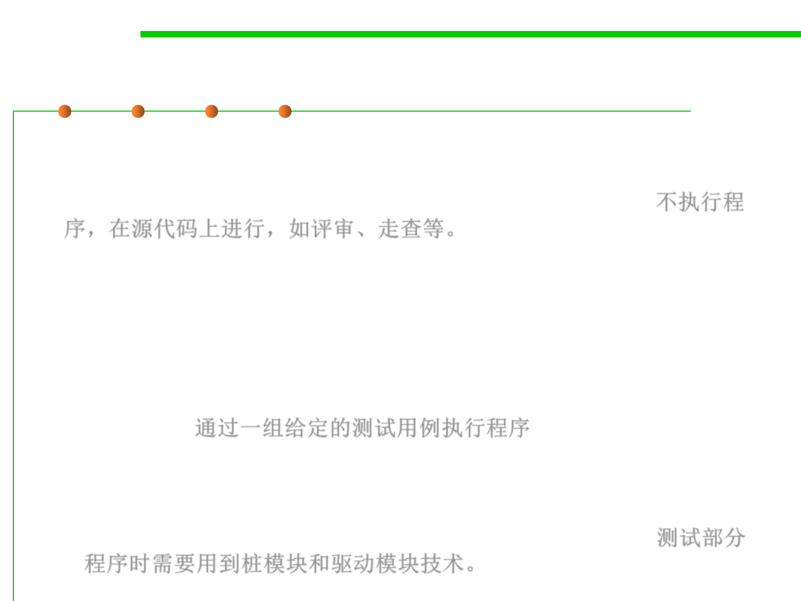
Static vs. Dynamic testing
7.5 Testing and Test-First Programming
▪ Static testing is performed without actually executing programs, in
most cases the testing is performed on some version of the source
code, and in the other cases, some form of the object code. 不执行程
序，在源代码上进行，如评审、走查等。
– Static testing is often implicit, as proofreading, plus when programming
tools/text editors check source code structure or compilers (pre-compilers)
check syntax and data flow as static program analysis. Reviews,
walkthroughs, or inspections are referred to as static testing. See 2.2
▪ Dynamic testing describes the testing of the dynamic behavior of
code, which actually executes programmed code with a given set
of test cases. 通过一组给定的测试用例执行程序
– Dynamic testing may begin before the program is 100% complete in order
to test particular sections of code and are applied to discrete functions or
modules. Typical techniques for this are either using stubs(桩模块
)/drivers(驱动模块) or execution from a debugger environment. 测试部分
程序时需要用到桩模块和驱动模块技术。

Static vs. Dynamic testing
7.5 Testing and Test-First Programming
▪ Static testing involves verification: Are we building the product
right?) 确认：我们是否在正确的构建产品？--强调过程
▪ Dynamic testing involves validation: Are we building the right
product? 验证：我们是否构建了正确的产品？--强调结果
7.5 Testing and Test-First Programming
White-box vs. black-box testing
▪ White-box testing (also known as clear box testing, glass box testing,
transparent box testing and structural testing) tests internal
structures or workings of a program by seeing the source code.
▪ Black-box testing treats the software as a "black box", examining
functionality without any knowledge of internal implementation,
without seeing the source code.
Input
软件
Output
White-box testing
Black-box testing
Testing vs. Debugging
7.5 Testing and Test-First Programming
▪ Some programmers use the terms “testing” and “debugging”
interchangeably, but careful programmers distinguish between the
two activities.
▪ Testing is a means of detecting errors. 测试是检测错误的一种手段--
发现
▪ Debugging is a means of diagnosing and correcting the root causes
of errors that have already been detected. 调试是诊断和纠正已经检测
到的错误的根本原因的手段。--纠正
▪ This section deals exclusively with testing. Debugging is discussed in
detail in 7.3.
7.5 Testing and Test-First Programming
Why Software Testing is Hard
▪ Exhaustive testing is infeasible: The space of possible test cases is
generally too big to cover exhaustively. Imagine exhaustively testing
a 32-bit floating-point multiply operation, a*b. There are 2^64 test
cases! 彻底测试不可行
▪ Haphazard testing (“just try it and see if it works”) is less likely to
find bugs, unless the program is so buggy that an arbitrarily-chosen
input is more likely to fail than to succeed. It also doesn’t increase
our confidence in program correctness. 随意测试很难发现错误
▪ Random or statistical testing doesn’t work well for software. Other
engineering disciplines can test small random samples (e.g. 1% of
hard drives manufactured) and infer the defect rate for the whole
production lot. This is only true for physical artifacts, but it’s not true
for software. 采用随机或统计测试，适用于硬件，但不适用于软件测
试。

7.5 Testing and Test-First Programming
Why Software Testing is Hard
▪ Software behavior varies discontinuously and discretely across the
space of possible inputs. 软件行为在输入空间上离散、不连续
– The system may seem to work fine across a broad range of inputs, and
then abruptly fail at a single boundary point.
– The famous Pentium division bug(奔腾除法缺陷) affected approximately 1
in 9 billion divisions.
(http://www.willamette.edu/~mjaneba/pentprob.html)
– Stack overflows, out of memory errors, and numeric overflow bugs tend
to happen abruptly, and always in the same way, not with probabilistic
variation.
▪ That’s different from physical systems, where there is often visible
evidence that the system is approaching a failure point (cracks in a
bridge) or failures are distributed probabilistically near the failure
point (so that statistical testing will observe some failures even
before the point is reached).
▪ Software test cases must be chosen carefully and systematically

7.5 Testing and Test-First Programming
Putting on Your Testing Hat
▪ Testing requires having the right attitude. When you’re coding,
your goal is to make the program work, but as a tester, you want
to make it fail.
▪ That’s a subtle but important difference. It is all too tempting to treat
code you’ve just written as a precious thing, a fragile eggshell, and
test it very lightly just to see it work.
▪ Instead, you have to be brutal. A good tester wields a
sledgehammer and beats the program everywhere it might be
vulnerable, so that those vulnerabilities can be eliminated.
（程序员的测试试图证明程序是正确的，测试员的测试则是为了证明程
序存在错误）
▪ Not only “make it fail”, but also “fail fast”. 不仅“让它失败”，而
且“快速尽早失败”。

Software Construction
2 Test Case
What is test case?
7.5 Testing and Test-First Programming
▪ A test case, is a set of test inputs, execution conditions, and
expected results. i.e., test case = {test inputs + execution
conditions+ expected results} 输入+执行条件+期望结果
– A test case is developed for a particular objective, such as to exercise a
particular program path or to verify compliance with a specific
requirement. 为特定目标设计
– A test case could simply be a question that you ask of the program. The
point of running the test is to gain information, for example whether the
program will pass or fail the test.
– Test case is the cornerstone of Quality Assurance whereas they are
developed to verify quality and behavior of a product.
– E.g., test cases: {2,4}, {0,0}, {-2,4} for program y=x^2 .
7.5 Testing and Test-First Programming
Typical written test case format
▪ A test case is usually a single step, or occasionally a sequence of
steps, to test the correct behavior/functionality, features of an
application. An expected result or expected outcome is usually
given.
▪ Summary:
– test inputs (data & steps)
– execution conditions
– expected results
▪ Larger test cases may also contain prerequisite(先决条件) states or
steps, and descriptions. 较大的测试用例可能还包含先决条件状态或
步骤以及说明
▪ A written test case should also contain a place for the actual result.书
面测试用例还应包含实际结果的地方

7.5 Testing and Test-First Programming
Typical written test case format
▪ Additional information that may be included:
– Test case ID
– Test case description
– Test step or order of execution number
– Related requirement(s)
– Test category
– Author
– Check boxes for whether the test can be or has been automated
– Pass/fail
– Remarks
▪ These steps can be stored in a word processor document,
spreadsheet, database or other common repository.

7.5 Testing and Test-First Programming
Characteristics of good test case
▪ Most likely to catch the wrong
▪ Not repetitive and not redundant
▪ The most effective in a group of similar test cases
▪ Neither too simple nor too complicated

7.5 Testing and Test-First Programming
Design principles for test case
▪ Representative 代表性
– Test cases can represent and cover a variety of reasonable and
unreasonable, legal and illegal, border and cross-border, and extreme
input data, operation and environmental settings, etc
▪ Decidability 可判定性
– The correctness of the test results is determinable, and each test case
should have a corresponding expected result.
▪ Reproducibility 可再现性
– For the same test case, the results of the implementation of the system
should be the same.

Test suite
7.5 Testing and Test-First Programming
▪ A test suite, less commonly known as a 'validation suite', is a
collection of test cases that are intended to be used to test a software
program to show that it has some specified set of behaviors.
▪ A test suite often contains:
– Detailed instructions or goals for each collection of test cases
– Information on the system configuration to be used during testing.
– A group of test cases may also contain prerequisite states or steps, and
descriptions of the following tests.

Software Construction
3 Test-First Programming
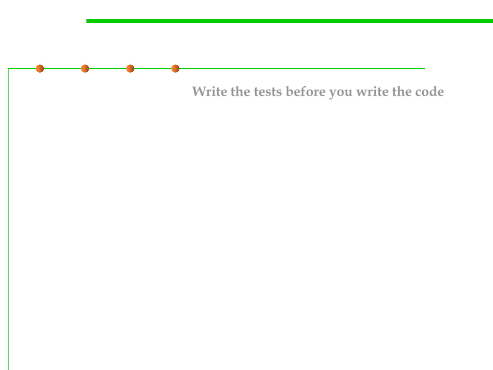
Test-First Programming
7.5 Testing and Test-First Programming
▪ Test-first programming: Write the tests before you write the code.
▪ Motivation
– Test early and often. 尽早并经常测试
– Don’t leave testing until the end, when you have a big pile of unvalidated
code. Leaving testing until the end only makes debugging longer and
more painful, because bugs may be anywhere in your code. 不要把测试留
到最后
– It’s far more pleasant to test your code as you develop it. 边开发边测试
▪ In test-first-programming, the development of a single function
proceeds in this order:
– Write a specification for the function. 写方法的规格说明
– Write tests that exercise the specification. 写符合规格说明的测试
– Write the actual code. Once your code passes the tests you wrote, you’re
done. 写代码→测试。
Test-First Programming
7.5 Testing and Test-First Programming
▪ The specification describes the input and output behavior of the
function.
– It gives the types of the parameters and any additional constraints on
them (e.g. sqrt’s parameter must be nonnegative).
– It also gives the type of the return value and how the return value relates
to the inputs.
– In code, the specification consists of the method signature and the
comment above it that describes what it does. 规格说明由方法签名和注释
（对输入和输出的描述）构成

Test-First Programming
7.5 Testing and Test-First Programming
▪ Writing tests first is a good way to understand the specification. 测
试优先有助于更好地理解规格说明
– The specification can be buggy, too — incorrect, incomplete, ambiguous,
missing corner cases. 规格说明本身也可能是错误的 - 不正确，不完整，模
棱两可，缺失边界情况。
– Trying to write tests can uncover these problems early, before you’ve
wasted time writing an implementation of a buggy spec. 测试优先可以尽
早发现设计问题，避免浪费时间做错误的事情。
Test First or Test Last?
7.5 Testing and Test-First Programming
▪ The defect-cost increase graph shows that debugging and associated
rework takes about 50 percent of the time spent in a typical
software development cycle.调试和相关返工大约花费了典型软件开
发周期的50％时间
▪ The defect-cost increase graph suggests that writing test cases first
will minimize the amount of time between when a defect is inserted
into the code and when the defect is detected and removed.首先编写
测试用例可以最大限度地减少缺陷插入到代码和检测并删除缺陷之间
的时间。
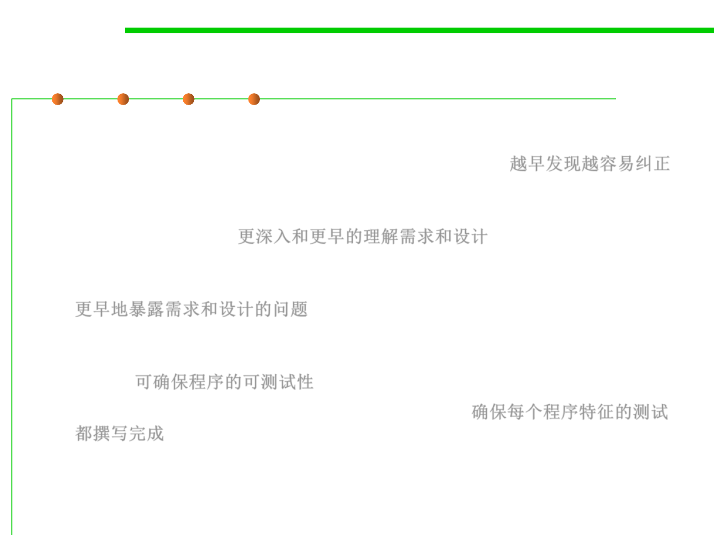
Test First or Test Last?
7.5 Testing and Test-First Programming
▪ Many reasons encourage developers to write test cases first:
– To detect defects earlier and correct them more easily 越早发现越容易纠正
– To lead to a deeper and earlier understanding of the product requirements,
ensures the effectiveness of the test code, and maintains a continual focus
on software quality. 更深入和更早的理解需求和设计
– To write test cases first exposes requirements problems sooner, before the
code is written, because it’s hard to write a test case for a poor requirement.
更早地暴露需求和设计的问题
– To ensure that the application is written for testability, as the developers
must consider how to test the application from the outset rather than adding
it later. 可确保程序的可测试性
– To ensure that tests for every feature get written. 确保每个程序特征的测试
都撰写完成
Test First or Test Last?
7.5 Testing and Test-First Programming
▪ Writing test cases before writing the code doesn’t take any more
effort than writing test cases after the code; it simply resequences the
test-case-writing activity. 不会产生额外的时间
▪ If you save your test cases (which you should), you can still test last,
in addition to testing first.

Software Construction
4 Unit Testing

Unit Testing
7.5 Testing and Test-First Programming
▪ Unit testing focuses verification effort on the smallest unit of
software design—the software component or module (classes in
OOP ). 单元测试关注软件最基本的组件或模块，如：OO开发中的类
– Using the component-level design description as a guide, important control
paths are tested to uncover errors within the boundary of the module.
– Testing modules in isolation leads to much easier debugging. When a unit
test for a module fails, you can be more confident that the bug is found in
that module, rather than anywhere in the program. 易于定位错误位置
– The unit test focuses on the internal processing logic and data structures
within the boundaries of a component. 测试内部处理逻辑和数据结构
Unit-test considerations
7.5 Testing and Test-First Programming
▪ The module interface is tested to ensure that
information properly flows into and out of the
program unit under test. 接口，测试输入输出
▪ Local data structures are examined to ensure
that data stored temporarily maintains its
integrity during all steps in an algorithm’s
execution. 数据的一致性
▪ All independent paths through the control
structure are exercised to ensure that all
statements in a module have been executed at
least once. 所有语句均被执行到
▪ Boundary conditions are tested to ensure that
the module operates properly at boundaries
Unit-test
established to limit or restrict processing.
Unit-test
Unit-test
▪ Finally, all error-handling paths are tested.
Unit-test

Unit-test procedures
7.5 Testing and Test-First Programming
▪ Unit testing is normally considered as an adjunct to the coding step.
The design of unit tests can occur before coding begins or after source
code has been generated. 编码的一部分，可早于或者晚于编码
▪ A review of design information provides guidance for establishing
test cases that are likely to uncover errors in each of the categories
discussed earlier. Each test case should be coupled with a set of
expected results. 设计信息为测试用例的建立提供了指导

Unit-test procedures
7.5 Testing and Test-First Programming
▪ Because a component is not a stand-alone
program, driver and/or stub software must
often be developed for each unit test.
▪ Driver(驱动模块) : In most applications a
driver is nothing more than a “main
program” that accepts test case data, passes
such data to the component (to be tested),
and prints relevant results.
▪ Stubs(桩模块) serve to replace modules that
are subordinate (invoked by) the
component to be tested. A stub or “dummy
ubprogram” uses the subordinate module’s
interface, may do minimal data
manipulation, prints verification of entry,
and returns control to the module
undergoing testing.

Software Construction
5 Automated Unit Testing with JUnit
7.5 Testing and Test-First Programming
A Popular unit test framework: JUnit
▪ JUnit is a widely-adopted unit testing framework for the Java
programming language.
▪ JUnit has been important in the development of test-driven
development, and is one of a family of unit testing frameworks which
is collectively known as xUnit that originated with SUnit.
▪ JUnit is linked as a JAR at compile-time; the framework resides under
package junit.framework for JUnit 3.8 and earlier, under package
org.junit for JUnit 4, and org.junit.jupiter.api for JUnit5.
▪ A research survey performed in 2013 across 10,000 Java projects hosted
on GitHub found that JUnit, (in a tie with slf4j-api), was the most
commonly included external library. Each library was used by 30.7% of
projects.
▪ http://www.junit.org

Junit test case
7.5 Testing and Test-First Programming
▪ A JUnit unit test is written as a method preceded by the annotation
@Test. 在每个测试方法前面使用@Test标注指明
▪ A unit test method typically contains one or more calls to the module
being tested, and then checks the results using assertion methods like
assertEquals, assertTrue, and assertFalse.
▪ For example, the tests we chose for
Math.max() above might look like
this when implemented for JUnit:
,

JUnit
7.5 Testing and Test-First Programming
▪ Note that the order of the parameters to assertEquals is important.
– The first parameter should be the expected result, usually a constant, that
the test wants to see.
– The second parameter is the actual result, what the code actually does.
– All the assertions supported by JUnit follow this order consistently:
expected first, actual second. 参数的顺序
▪ If an assertion in a test method fails, then that test method returns
immediately, and JUnit records a failure for that test.
▪ A test class can contain any number of @Test methods, which are run
independently when you run the test class with JUnit.
▪ Even if one test method fails, the others will still be run.
JUnit
7.5 Testing and Test-First Programming
▪ The class structure of JUnit
– TestCase class: a test case, corresponding test code is written in it.
– TestSuite class: a package of some TestCases which can be run as a whole.
JUnit
7.5 Testing and Test-First Programming
▪ To create a new JUnit test case or test suite in an existing project
JUnit
▪ JUnit3：
7.5 Testing and Test-First Programming
▪ JUnit4：
setUp() or @Before： Prepare for the test, complete the initialization;
tearDown() or @After： Clean up the test environment

JUnit
7.5 Testing and Test-First Programming
▪ setUpBeforeClass or @BeforeClass or @BeforeAll （JUnit3/4/5）
– run once before any of the test methods in the class, usually for initialization
@BeforeClass
public static void setUpBeforeClass() throws Exception {
System.out.println("this is before class");
}
▪ tearDownAfterClass or @AfterClass or @AfterAll （JUnit3/4/5）
– run after all the tests in the class have been run, usually for clean-up
@AfterClass
public static void tearDownAfterClass() throws Exception {
System.out.println("this is after class");
}

JUnit
7.5 Testing and Test-First Programming
▪ setUp or @Before or @BeforeEach （JUnit3/4/5）
– @Before causes that method to be run before each Test method
@Before
public void setUp() throws Exception {
System.out.println("this is before");
}
▪ tearDown or @After or @AfterEach （JUnit3/4/5）
– @After causes that method to be run after each Test method.
@After
public void tearDown() throws Exception {
System.out.println("this is Down");
}
JUnit
7.5 Testing and Test-First Programming
Program to be tested：
public class Calcuator {
public double add (double n1, double n2) {
return n1 + n2;
}
}
Test case：
import junit.framework.TestCase;
public class TestCalcuator extends TestCase {
public void testAdd(){
Input
Calcuator calcuator=new Calcuator();
double result=calcuator.add(1,2);
assertEquals(3,result,0);
}
}
Expected result

JUnit Test organization
7.5 Testing and Test-First Programming
▪ Have a test class FooTest for each public
class Foo
▪ Have a source directory and a test
directory
– Store FooTest and Foo in the same package
– Tests can access members with default
(package) visibility
▪ 注意：需要将src目录和test目录均指定为源代
码目录(source folders)

Software Construction
6 Black-box Testing
Black-box testing
7.5 Testing and Test-First Programming
▪ Black-box testing is a method of software testing that examines the
functionality of an application without peering into its internal
structures or workings.
▪ Black-box testing attempts to find errors in the following
categories:
– (1) incorrect or missing functions,
– (2) interface errors,
– (3) errors in data structures or external database access,
– (4) behavior or performance errors, and
– (5) initialization and termination errors.
Input
软件
Output

7.5 Testing and Test-First Programming
Test cases for black-box testing
▪ Test cases for black-box testing are built around specifications and
requirements, i.e., what the application is supposed to do.黑盒测试
的测试用例是围绕规范和需求构建的，即应用程序应该做什么。
▪ Test cases are generally derived from external descriptions of the
software, including specifications, requirements and design
parameters. Although the tests used are primarily functional in
nature, non-functional tests may also be used.
Spec.
Program
Spec.
Program
Test Case
Test Cases
7.5 Testing and Test-First Programming
Test design techniques for black-box testing
▪ Typical black-box test design techniques include:
– Equivalence partitioning
– Boundary value analysis
– Decision table testing
– All-pairs testing
– Cause–effect graph
– Error guessing
– State transition testing
– Use case testing
– User story testing
Input
软件
– Domain analysis
– Combining technique
–…
Output

Software Construction
6.1 Choosing Test Cases by
Partitioning
Equivalence Partitioning
7.5 Testing and Test-First Programming
▪ Equivalence partitioning is a testing method that divides the input
domain of a program into classes of data from which test cases can
be derived.
▪ Test-case design for equivalence partitioning is based on an
evaluation of equivalence classes for an input condition.
– If a set of objects can be linked by relationships that are symmetric,
transitive, and reflexive, an equivalence class is present. (如果一组对象可
以通过对称、传递和自反的关系链接，则存在等价类。)
▪ An equivalence class represents a set of valid or invalid states for
input conditions. Typically, an input condition is either a specific
numeric value, a range of values, a set of related values, or a Boolean
condition.等价类表示输入条件的一组有效或无效状态
Equivalence Partitioning
7.5 Testing and Test-First Programming
▪ The idea behind equivalence classes is to partition the input space
into sets of similar inputs on which the program has similar
behavior, then use one representative of each set. (相似的输入会产生
相似的结果的输入分为一个集合，可以用集合中一个输入的测试结果
代表整个集合)
– This approach makes the best use of limited testing resources by choosing
dissimilar test cases, and forcing the testing to explore parts of the input
space that random testing might not reach. 最大限度地利用有限测试资源
▪ We can also partition the equivalence classes (similar outputs on
which the program has similar behavior) if we need to ensure our
tests will explore different parts of the output space. (对输出也可划分
等价类)
7.5 Testing and Test-First Programming
Guidelines for Equivalence Partitioning
▪ Equivalence classes may be defined according to the following
guidelines:
– If an input condition specifies a range, one valid and two invalid
equivalence classes are defined. 输入是一个范围，则定义1个有效和2个无
效等价类
– If an input condition requires a specific value, one valid and two invalid
equivalence classes are defined. 输入是特定值，则定义1个有效和2个无效
等价类
– If an input condition specifies a member of a set, one valid and one invalid
equivalence class are defined. 输入是集合的成员，则定义1个有效和1个无
效等价类
– If an input condition is Boolean, one valid and one invalid class are
defined. 输入是布尔型，则定义1个有效和1个无效等价类。

7.5 Testing and Test-First Programming
Example: BigInteger.multiply()
▪ BigInteger is a class built into the Java library that can represent
integers of any size, unlike the primitive types int and long that
have only limited ranges.
▪ BigInteger has a method multiply that multiplies two BigInteger
values together:
/**
* @param val another BigInteger
* @return a BigInteger whose value is (this * val).
*/
public BigInteger multiply(BigInteger val)
E.g.,
BigInteger a = ...;
BigInteger b = ...;
BigInteger ab = a.multiply(b);

7.5 Testing and Test-First Programming
Example: BigInteger.multiply()
▪ We should think of multiply as a function taking two inputs:
BigInteger × BigInteger → BigInteger
▪ So we have a two-dimensional input space, consisting of all the pairs
of integers (a,b).
▪ We might start with these partitions:
– a and b are both positive
– a and b are both negative
– a is positive, b is negative
– a is negative, b is positive

7.5 Testing and Test-First Programming
Example: BigInteger.multiply()
▪ There are also some special cases for multiplication that we should
check: 0, 1, and -1.
– a or b is 0, 1, or -1
▪ Finally, as a suspicious tester trying to find bugs, we might suspect
that the implementor of BigInteger might try to make it faster by
using int or long internally when possible, and only fall back to an
expensive general representation (like a list of digits) when the value
is too big.
▪ So we should definitely also try integers that are very big, bigger
than the biggest long. (测试java支持的最大值)
– a or b is small
– the absolute value of a or b is bigger than Long. MAX_VALUE (the biggest
possible primitive integer in Java, which is roughly 2^63)
7.5 Testing and Test-First Programming
Example: BigInteger.multiply()
▪ Let’s bring all these observations together into a straightforward
partition of the whole (a,b) space.
▪ We’ll choose a and b independently from:
–0
–1
– -1
– small positive integer
– small negative integer
– huge positive integer
– huge negative integer
▪ So this will produce 7*7=49 partitions
that completely cover the space of pairs
of integers.
7.5 Testing and Test-First Programming
Example: BigInteger.multiply()
▪ To produce the test suite, we would pick an arbitrary pair (a,b) from
each square of the grid, for example:
– (a,b) = (-3, 25) to cover (small negative, small positive)
– (a,b) = (0, 30) to cover (0, small positive)
– (a,b) = (2^100, 1) to cover (large positive, 1)
– etc.
▪ The points are test cases that we
might choose to completely cover
the partition.
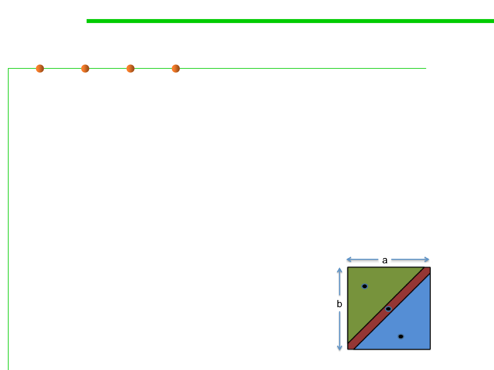 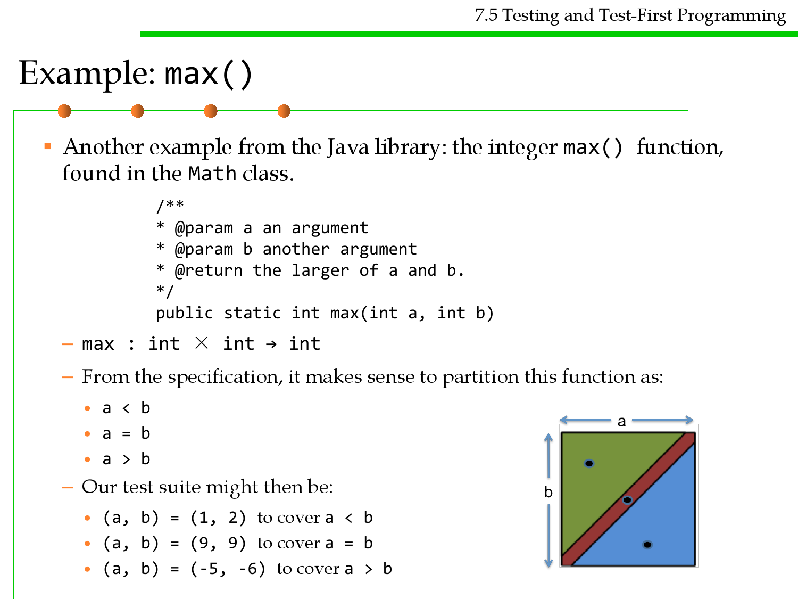
Example: max()
7.5 Testing and Test-First Programming
▪ Another example from the Java library: the integer max() function,
found in the Math class.
/**
* @param a an argument
* @param b another argument
* @return the larger of a and b.
*/
public static int max(int a, int b)
– max : int × int → int
– From the specification, it makes sense to partition this function as:
•a<b
•a=b
•a>b
– Our test suite might then be:
• (a, b) = (1, 2) to cover a < b
• (a, b) = (9, 9) to cover a = b
• (a, b) = (-5, -6) to cover a > b

7.5 Testing and Test-First Programming
Two Extremes for Covering the Partition
▪ Full Cartesian product (完全的笛卡尔乘积)
– Every legal combination of the partition dimensions is covered by one
test case. 划分的每个合理组合设计一个测试用例
– For the max example that included boundaries, which has three
dimensions with 3 parts, 5 parts, and 5 parts respectively, it would mean
up to 3 × 5 × 5 = 75 test cases.
– In practice not all of these combinations are possible, however. For
example, there’s no way to cover the combination a < b, a=0, b=0, because
a can’t be simultaneously less than zero and equal to zero. 实践中，有些组
合是不可能的。
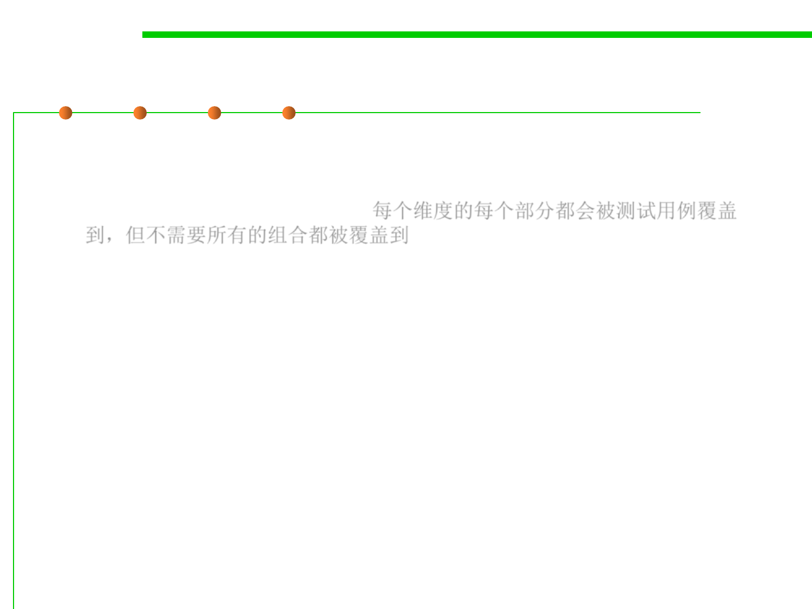
7.5 Testing and Test-First Programming
Two Extremes for Covering the Partition
▪ Cover each part(覆盖每一个分区)
– Every part of each dimension is covered by at least one test case, but not
necessarily every combination. 每个维度的每个部分都会被测试用例覆盖
到，但不需要所有的组合都被覆盖到
– With this approach, the test suite for max might be as small as 5 test cases
if carefully chosen. That’s the approach we took above, which allowed us
to choose 5 test cases.
▪ Often we strike some compromise between these two extremes,
based on human judgement and caution, and influenced by white-
box testing and code coverage tools.

Software Construction
6.2 Include Boundaries in the
Partition

Boundary Value Analysis
7.5 Testing and Test-First Programming
▪ A greater number of errors occurs at the boundaries of the input
domain rather than in the “center”: 错误隐藏在角落里和边界处
– 0 is a boundary between positive numbers and negative numbers
– The maximum and minimum values of numeric types, like int and double
– Emptiness (the empty string, empty list, empty array) for collection types
– The first and last element of a collection
▪ It is for this reason that boundary value analysis (BVA) has been
developed as a testing technique. Boundary value analysis leads to
a selection of test cases that exercise bounding values.
– Boundary value analysis is a test-case design technique that complements
equivalence partitioning. 边界值分析是等价类划分的补充
– Rather than selecting any element of an equivalence class, BVA leads to
the selection of test cases at the “edges” of the class.
– Rather than focusing solely on input conditions, BVA derives test cases
from the output domain as well. 不仅关注输入，也可以应用于输出
7.5 Testing and Test-First Programming
Why do bugs often happen at boundaries?
▪ One reason is that programmers often make off-by-one(丢失一个/一
位偏移) mistakes (like writing <= instead of <, or initializing a
counter to 0 instead of 1). 在边界处程序员易于犯错误
▪ Another is that some boundaries may need to be handled as special
cases in the code. 在代码中边界处需要特殊处理
▪ Another is that boundaries may be places of discontinuity(不连续) in
the code’s behavior. When an int variable grows beyond its
maximum positive value, for example, it abruptly becomes a
negative number. 边界可能是代码行为中的不连续点
▪ It’s important to include boundaries as subdomains in your partition,
so that you’re choosing an input from the boundary.将边界作为子分
区包含在分区中非常重要，以便从边界选择输入。

7.5 Testing and Test-First Programming
Guidelines for Boundary Value Analysis
▪ 1. If an input condition specifies a range bounded by values a and b,
test cases should be designed with values a and b and just above and
just below a and b. 对范围[a,b]，取值a,b,以及紧邻a,b的值
▪ 2. If an input condition specifies a number of values, test cases
should be developed that exercise the minimum and maximum
numbers. Values just above and below minimum and maximum are
also tested. 一组值，取值最大最小，以及邻近最大最小的值
▪ 3. Apply guidelines 1 and 2 to output conditions. For example,
assume that a temperature versus pressure table is required as
output from an engineering analysis program. Test cases should be
designed to create an output report that produces the maximum (and
minimum) allowable number of table entries.
▪ 4. If internal program data structures have prescribed boundaries
(e.g., a table has a defined limit of 100 entries), be certain to design a
test case to exercise the data structure at its boundary. 在数据结构的
边界取值

Example: max()
7.5 Testing and Test-First Programming
▪ Let’s redo max : int × int → int.
▪ Partition into:
– Relationship between a and b
•a<b
•a=b
•a>b
– Value of a
•a=0
•a<0
•a>0
• a = minimum integer
• a = maximum integer
– Value of b
•b=0
•b<0
•b>0
• b = minimum integer
• b = maximum integer

Example: max()
7.5 Testing and Test-First Programming
▪ Now let’s pick test values that cover all these classes:
– (1, 2) covers a < b, a > 0, b > 0
– (-1, -3) covers a > b, a < 0, b < 0
– (0, 0) covers a = b, a = 0, b = 0
– (Integer.MIN_VALUE, Integer.MAX_VALUE) covers a < b, a = minint,
b = maxint
– (Integer.MAX_VALUE, Integer.MIN_VALUE) covers a > b, a = maxint,
b = minint

Software Construction
7 White-box Testing
7.5 Testing and Test-First Programming
Black-box vs. White-box testing
▪ Black-box testing means choosing test cases only from the
specification, not the implementation of the function. 黑盒测试依
据规格说明设计测试用例，而不是功能的实现
– We partitioned and looked for boundaries in multiply and max without
looking at the actual code for these functions.
▪ White-box testing (also called glass box testing) means choosing
test cases with knowledge of how the function is actually
implemented. 白盒测试则依据功能的具体实现设计测试用例
– For example, if the implementation selects different algorithms depending
on the input, then you should partition according to those domains.
– If the implementation keeps an internal cache that remembers the answers
to previous inputs, then you should test repeated inputs. 如内部缓存是
通过记录之前输入的答案实现，则测试时应测试重复的输入以验证
此机制是否生效。

White-box testing
7.5 Testing and Test-First Programming
▪ In white-box testing an internal perspective of the system, as well as
programming skills, are used to design test cases.
▪ The tester chooses inputs to exercise paths through the code and
determine the appropriate outputs.
▪ White-box testing can be applied at the unit, integration and system
levels of the software testing process. In general, it is performed early
in the testing process.
Spec.
Program
Spec.
Program
Test Case
Test Cases
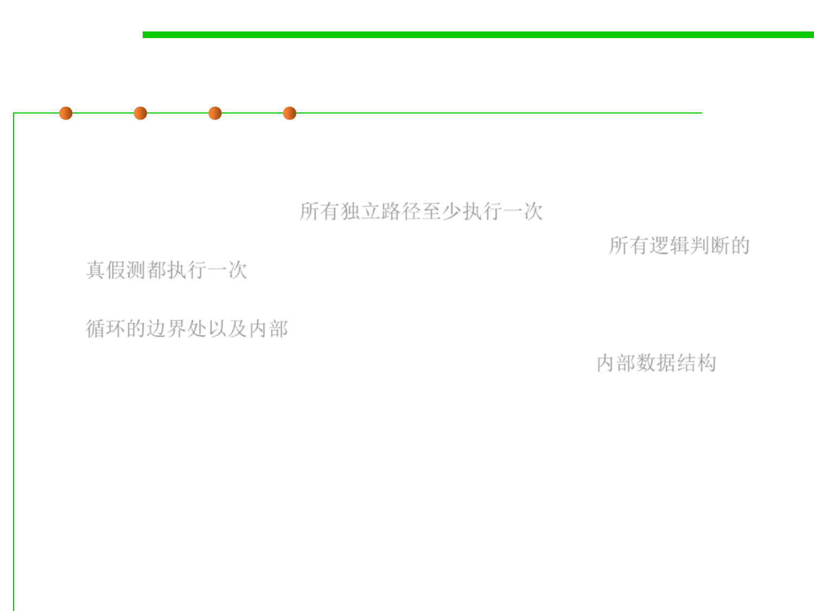
White-box testing
7.5 Testing and Test-First Programming
▪ Using white-box testing methods, you can derive test cases that
– Guarantee that all independent paths within a module have been
exercised at least once, 所有独立路径至少执行一次
– Exercise all logical decisions on their true and false sides, 所有逻辑判断的
真假测都执行一次
– Execute all loops at their boundaries and within their operational bounds,
循环的边界处以及内部
– Exercise internal data structures to ensure their validity. 内部数据结构
 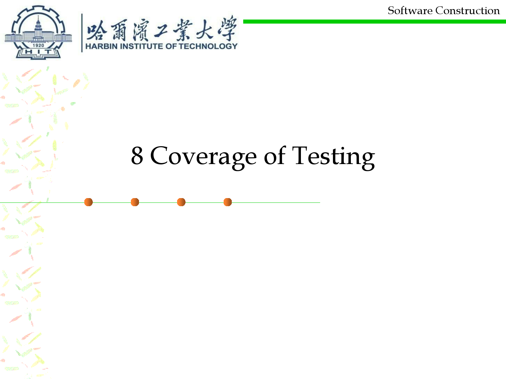
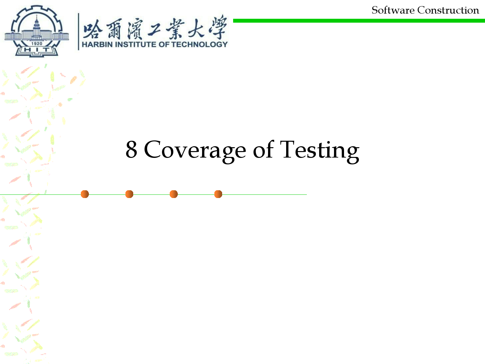
Software Construction
8 Coverage of Testing

Code coverage
7.5 Testing and Test-First Programming
▪ The most thorough white-box method is to cover every path in the
program, but because the program generally contains a loop, so the
number of paths is great.
▪ It is almost impossible to execute every path, and we can only try to
ensure that the coverage is as high as possible.
▪ An example:
– A program contains a loop that needs to be executed 20 times. It includes
520 different execution paths. Supposing that it takes 1 ms to test each path,
it will take 3170 years to finish testing all the paths.

Code coverage
7.5 Testing and Test-First Programming
▪ White-box testing should consider the code coverage of the test case
for the internal logic of the program.
▪ Code coverage is a measure used to describe the degree to which
the source code of a program is executed when a particular test
suite runs.代码覆盖率是用来描述特定测试运行时程序的源代码执行
程度的度量。
– A program with high code coverage, measured as a percentage, has had
more of its source code executed during testing which suggests it has a
lower chance of containing undetected software bugs compared to a
program with low code coverage.
– Many different metrics can be used to calculate code coverage; some of the
most basic are the percentage of program subroutines and the percentage
of program statements called during execution of the test suite. 在执行测
试中，子程序和被调用语句的百分是常用的测量标准

Code coverage
7.5 Testing and Test-First Programming
▪ Basic coverage criteria
– Function coverage – Has each function (or subroutine) in the program
been called?
– Statement coverage – Has each statement in the program been executed?
– Decision or Branch coverage – Has each branch of each control structure
(such as in if and case statements) been executed? For example, given an if
statement, have both the true and false branches been executed? Another
way of saying this is, has every edge in the program been executed?
– Condition or predicate coverage – Has each Boolean sub-expression
evaluated both to true and false?
– Condition/decision coverage requires that both decision and condition
coverage be satisfied.
– Multiple condition coverage requires that all combinations of conditions
inside each decision are tested.
– Path coverage: is every possible combination of branches — every path
through the program — taken by some test case?

Code Coverage
7.5 Testing and Test-First Programming
▪ Branch coverage is stronger (requires more tests to achieve) than
statement coverage, and path coverage is stronger than branch
coverage.
▪ In industry, 100% statement coverage is a common goal, but even
that is rarely achieved due to unreachable defensive code (like
“should never get here” assertions).
▪ 100% branch coverage is highly desirable, and safety critical industry
code has even more arduous criteria (e.g., MC/DC, modified
condition/decision coverage). 安全相关的软件需要比100%覆盖更高
的要求
▪ Unfortunately 100% path coverage is infeasible, requiring
exponential-size test suites to achieve.实际中，很难做到100%覆盖，
需要大量的测试用例
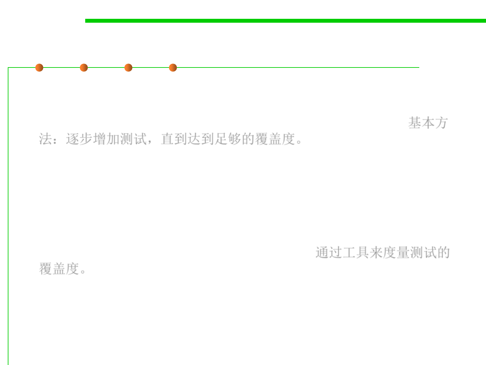 
Code Coverage
7.5 Testing and Test-First Programming
▪ A standard approach to testing is to add tests until the test suite
achieves adequate statement coverage: i.e., so that every reachable
statement in the program is executed by at least one test case. 基本方
法：逐步增加测试，直到达到足够的覆盖度。
▪ In practice, statement coverage is usually measured by a code
coverage tool, which counts the number of times each statement is
run by your test suite.
▪ With such a tool, white box testing is easy; you just measure the
coverage of your black box tests, and add more test cases until all
important statements are logged as executed. 通过工具来度量测试的
覆盖度。

EclEmma
7.5 Testing and Test-First Programming
▪ A good code coverage tool for Eclipse is EclEmma
– http://www.eclemma.org
– http://www.ibm.com/developerworks/cn/java/j-lo-eclemma
▪ Lines that have been
executed by the test suite
are colored green, and lines
not yet covered are red.
▪ If you saw this result from
your coverage tool, your
next step would be to come
up with a test case that
causes the body of
the while loop to execute,
and add it to your test suite
so that the red lines become
green.

Software Construction
9 Integration Testing

7.5 Testing and Test-First Programming
From unit testing to integration testing
▪ Unit tests test a single module (like a method or a class) in isolation.
– Testing modules in isolation leads to much easier debugging.
– When a unit test for a module fails, you can be more confident that the bug
is found in that module, rather than anywhere in the program.
▪ In contrast to a unit test, an integration test tests a combination of
modules, or even the entire program.
– If all you have are integration tests, then when a test fails, you have to hunt
for the bug. It might be anywhere in the program.
– Integration tests are still important, because a program can fail at the
connections between modules.
• For example, one module may be expecting different inputs than it’s actually
getting from another module.
– But if you have a thorough set of unit tests that give you confidence in the
correctness of individual modules, then you’ll have much less searching to
do to find the bug.

Integration Testing
7.5 Testing and Test-First Programming
▪ Integration testing is a type of software testing that seeks to verify
the interfaces between components against a software design.
Software components may be integrated in an iterative way or all.
▪ Integration testing is a systematic technique for constructing the
software architecture while at the same time conducting tests to
uncover errors associated with interfacing. The objective is to take
unit-tested components and build a program structure that has been
dictated by design.
▪ Integration testing works to expose defects in the interfaces and
interaction between integrated components (modules).

7.5 Testing and Test-First Programming
What to be tested in Integration Testing?
▪ Once all modules have been unit tested: “If they all work
individually, why do you doubt that they’ll work when we put them
together?” The problem, of course, is “putting them together”—
interfacing.
– Data can be lost across an interface; 数据丢失
– One component can have an inadvertent, adverse effect on another; 组件
相互影响
– Subfunctions, when combined, may not produce the desired major
function; 集成后不会得到期望的功能
– Individually acceptable imprecision may be magnified to unacceptable
levels; 单独执行中可接受的不精确可能会放大到不可接受的水平;
– Global data structures can present problems. 全局数据结构存在问题
– Sadly, the list goes on and on.
7.5 Testing and Test-First Programming
Example: testing a web search engine

7.5 Testing and Test-First Programming
Example: testing a web search engine
▪ Test process:
– Unit tests just for getWebPage() that test it on various URLs
– Unit tests just for extractWords() that test it on various strings (to use a
stub of getWebPage() to isolate the test)
– Unit tests for makeIndex() that test it on various sets of URLs (integrating
two functions together)

7.5 Testing and Test-First Programming
Nonincremental vs. Incremental Testing
▪ Nonincremental integration that is to construct the program using a
“big bang” approach. All components are combined in advance.
The entire program is tested as a whole.
– A set of errors is encountered. Correction is difficult because isolation of
causes is complicated by the vast expanse of the entire program. Once
these errors are corrected, new ones appear and the process continues in a
seemingly endless loop.
▪ Incremental integration is the antithesis of the big bang approach.
The program is constructed and tested in small increments, where
errors are easier to isolate and correct; interfaces are more likely to be
tested completely; and a systematic test approach may be applied.
– Top-down integration
– Bottom-up integration
Nonincremental integration
7.5 Testing and Test-First Programming
▪ E.g.：
– Test A (with stubs for B, C, D)
– Test B (with driver for A and stub for E)
– Test C (with driver for A)
– Test D (with driver for A and stub for F)
– Test E (with driver for B)
– Test F (with driver for D)
– Test (A, B, C, D, E, F)
A
BCD
E
F
Top-down integration
7.5 Testing and Test-First Programming
▪ Top-down integration testing is an incremental approach to
construction of the software architecture. Modules are integrated by
moving downward through the control hierarchy, beginning with
the main control module (main program). Modules subordinate (and
ultimately subordinate) to the main control module are incorporated
into the structure in either a depth-first or breadth-first manner.

Top-down integration
7.5 Testing and Test-First Programming
▪ The integration process of Top-down integration is performed in a
series of five steps:
– 1. The main control module is used as a test driver and stubs are
substituted for all components directly subordinate to the main control
module.
– 2. Depending on the integration approach selected (i.e., depth or breadth
first), subordinate stubs are replaced one at a time with actual
components.
– 3. Tests are conducted as each component is integrated.
– 4. On completion of each set of tests, another stub is replaced with the real
component.
– 5. Regression testing (discussed later in this section) may be conducted to
ensure that new errors have not been introduced.
– The process continues from step 2 until the entire program structure is
built.

Top-down integration
7.5 Testing and Test-First Programming
▪ Top-down integration testing: depth-first integration integrates all
components on a major control path of the program structure.
Selection of a major path is somewhat arbitrary and depends on
application-specific characteristics.
A
BCD
E
F
A
A
A
A
s1 s2 s3 B s2 s3 B s2 s3 B C s3
test A
s4
E
integrate B integrate E
A
A
E
integrate C
B
C
D
B CD
E
S5
integrate D
E
F
integrate F
7.5 Testing and Test-First Programming
Incremental integration--Top-down integration
▪ Top-down integration testing: Breadth-first integration incorporates
all components directly subordinate at each level, moving across the
structure horizontally.
– Test A (with stubs for B,C,D)
– Test A;B (with stubs for E,C,D)
– Test A;B;C (with stubs for E,D)
– Test A;B;C;D (with stubs for E,F)
– Test A;B;C;D;E (with stubs for F)
– Test A;B;C;D;E;F
A
BCD
E
F

Bottom-up integration
7.5 Testing and Test-First Programming
▪ Bottom-up integration. Bottom-up integration testing, as its name
implies, begins construction and testing with atomic modules (i.e.,
components at the lowest levels in the program structure). Because
components are integrated from the bottom up, the functionality
provided by components subordinate to a given level is always
available and the need for stubs is eliminated.
▪ A bottom-up integration strategy may be implemented with the
following steps:
– 1. Low-level components are combined into clusters (sometimes called
builds) that perform a specific software subfunction.
– 2. A driver (a control program for testing) is written to coordinate test case
input and output.
– 3. The cluster is tested.
– 4. Drivers are removed and clusters are combined moving upward in the
program structure.
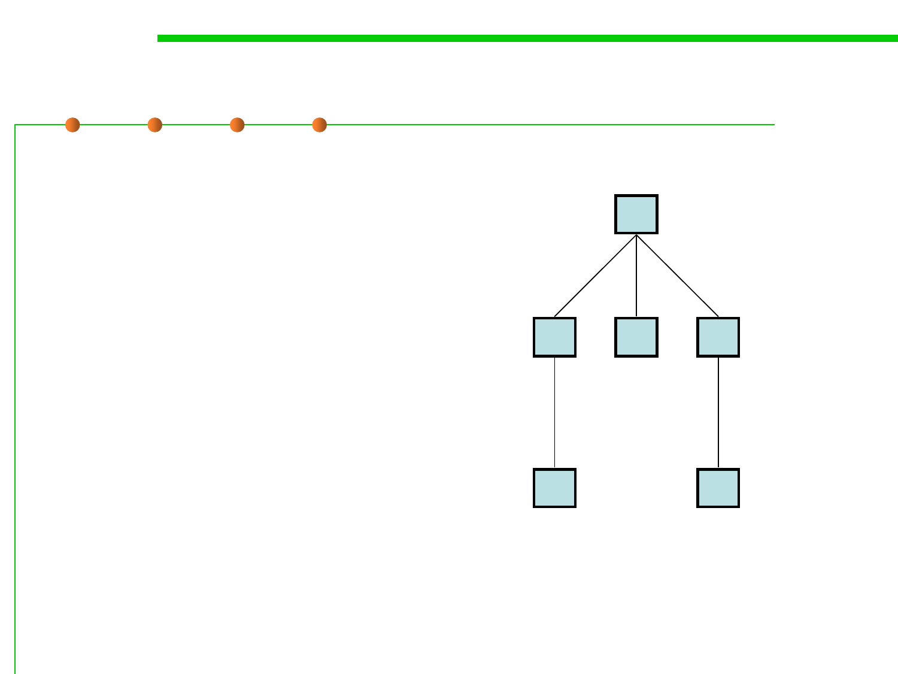
Bottom-up integration
▪ E.g.,
– Test E (with driver for B)
– Test C (with driver for A)
– Test F (with driver for D)
– Test B;E (with driver for A)
– Test D;F (with driver for A)
– Test (A;B;C;D;E;F)
7.5 Testing and Test-First Programming
A
B
C
D
E
F

7.5 Testing and Test-First Programming
Top-down integration vs. bottom-up integration
▪ Top-down integration
– Pros
• It’s possible to examine the program's main control and decision-making
mechanism as soon as possible, so can find errors earlier
• a complete function of software can be realized and displayed(depth-first
integration)
• less drive modules required
– Cons
• The number of stub modules required is huge;
• In the test of higher-level modules, the low-level processing is using stub
modules instead, which can not reflect the real situation, and important data can
not be sent back to the upper module in time, so the test is not sufficient;
 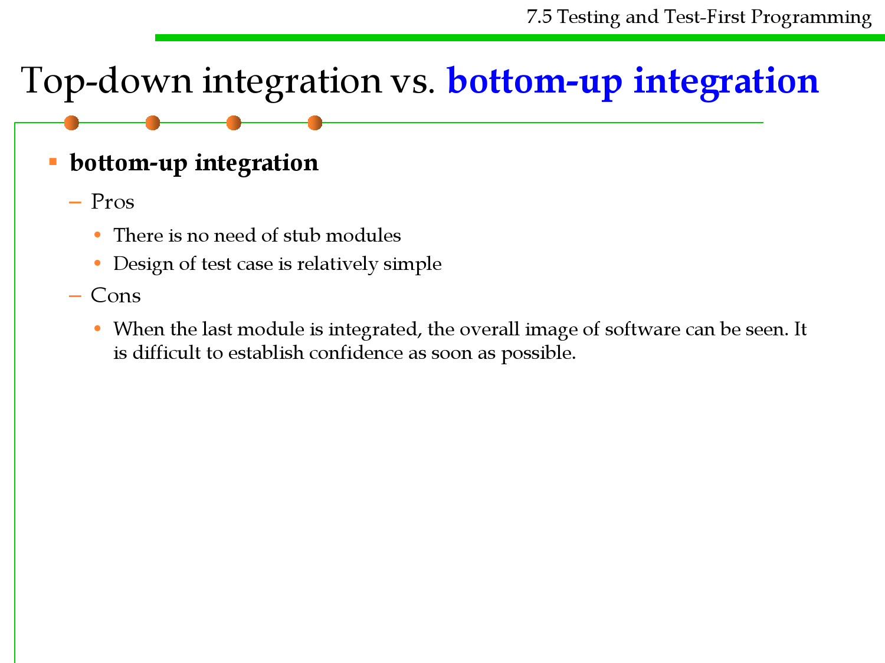
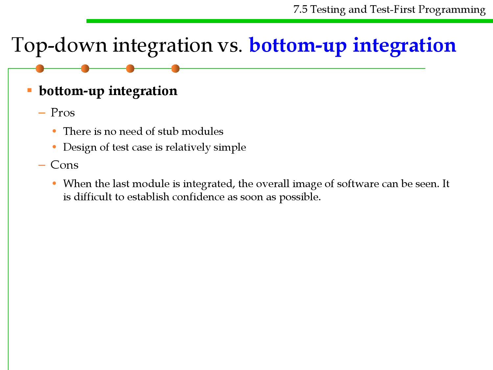
7.5 Testing and Test-First Programming
Top-down integration vs. bottom-up integration
▪ bottom-up integration
– Pros
• There is no need of stub modules
• Design of test case is relatively simple
– Cons
• When the last module is integrated, the overall image of software can be seen. It
is difficult to establish confidence as soon as possible.
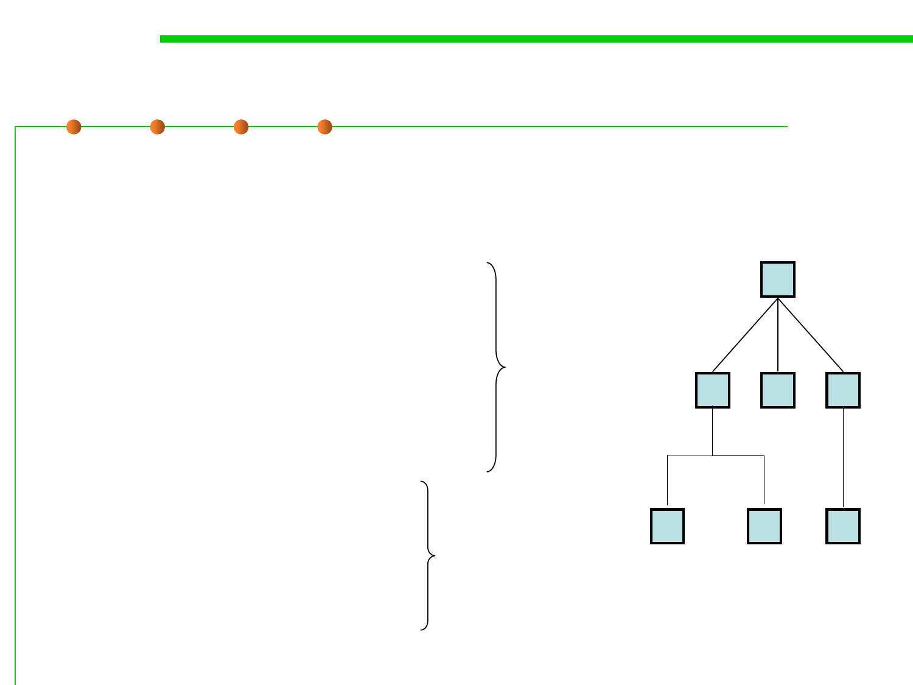
Sandwich integration
7.5 Testing and Test-First Programming
▪ Sandwich integration is an approach to combine top-down
integration with bottom-up integration.
▪ B is selected as the middle layer
– Test A (with stubs for B,C,D)
A
– Test B (with driver for A and stubs for E,F)
– Test C (with driver for A)
– Test D (with driver for A and stub for G)
– Test A;B (with stubs for E,F,C,D)
Top-down
BCD
– Test A;B;C (with stubs for E,F,D)
– Test A;B;C;D (with stubs for E,F,G)
– Test E (with driver for B)
– Test F (with driver for B)
– Test B;E;F (with driver for A)
– Test G (with driver for D)
Bottom-up
E
F
G
– Test D;G (with driver for A)
– Test A;B;C;D;E;F;G

Software Construction
10 Automated Testing and
Regression Testing
Automated testing
7.5 Testing and Test-First Programming
▪ Nothing makes tests easier to run, and more likely to be run, than
complete automation.
▪ Automated testing means running the tests and checking their
results automatically. 自动运行测试和检查结果
– A test driver should not be an interactive program that prompts you for
inputs and prints out results for you to manually check.
– Instead, a test driver should invoke the module itself on fixed test cases
and automatically check that the results are correct.
– The result of the test driver should be either “all tests OK” or “these tests
failed: …”
▪ A good testing framework, like JUnit, helps you build automated test
suites.
–

7.5 Testing and Test-First Programming
Automated testing vs. Automatic test generation
▪ Note that automated testing frameworks like JUnit make it easy to
run the tests, but you still have to come up with good test cases
yourself.
▪ Automatic test generation is a hard problem, still a subject of active
computer science research.

Regression testing
7.5 Testing and Test-First Programming
▪ Once you have test automation, it’s very important to rerun your
tests when you modify your code.
▪ Software engineers know from painful experience that any change to
a large or complex program is dangerous.
▪ Whether you’re fixing another bug, adding a new feature, or
optimizing the code to make it faster, an automated test suite that
preserves a baseline of correct behavior – even if it’s only a few tests
– will save your bacon.
▪ Running the tests frequently while you’re changing the code
prevents your program from regressing — introducing other bugs
when you fix new bugs or add new features.
▪ Running all your tests after every change is called regression testing.
每次更改代码后都需要运行的测试，称之为回归测试


Regression testing
7.5 Testing and Test-First Programming
▪ Whenever you find and fix a bug, take the input that elicited the bug
and add it to your automated test suite as a test case.
▪ This kind of test case is called a regression test. This helps to populate
your test suite with good test cases.
▪ Remember that a test is good if it elicits a bug — and every
regression test did in one version of your code!
▪ Saving regression tests also protects against reversions that
reintroduce the bug.
▪ The bug may be an easy error to make, since it happened once
already.
Test-first debugging
7.5 Testing and Test-First Programming
▪ This idea also leads to test-first debugging.
– When a bug arises, immediately write a test case for it that elicits it, and
immediately add it to your test suite. 出现bug，立即写针对的测试
– Once you find and fix the bug, all your test cases will be passing, and
you’ll be done with debugging and have a regression test for that bug. 修
复bug并通过此bug的测试后，进行回归测试。
▪ In practice, these two ideas, automated testing and regression
testing, are almost always used in combination.
– Regression testing is only practical if the tests can be run often,
automatically.
– Conversely, if you already have automated testing in place for your
project, then you might as well use it to prevent regressions.
▪ So automated regression testing is a best-practice of modern
software engineering.


Software Construction
11 Documenting Your Testing
Strategy

7.5 Testing and Test-First Programming
Documenting Testing Strategy
▪ Unit testing strategy is a complementary document of ADT’s design.
测试策略是ADT设计的补充
▪ Aligning with the idea of test-first programming, it is recommended
to write down the testing strategy (such as partitioning and
boundary) according to which you design your test cases. 写下测试
策略，如何进行的等价类划分和选取的边界。
▪ The objective is to make code review to check if your testing is
sufficient, and to make other developers understand your test. 其目
标是进行代码审查时检查测试是否充分，并让其他开发人员了解你的
测试。

An example
7.5 Testing and Test-First Programming
Document the strategy at the top
of the test class:
Each test method should have a
comment above it saying how its
test case was chosen, i.e. which
parts of the partitions it covers:


Software Construction
Summary

Summary of this lecture
7.5 Testing and Test-First Programming
▪ Test-first programming. Write tests before you write code.
▪ Partitioning and boundaries for choosing test cases systematically.
▪ White box testing and statement coverage for filling out a test suite.
▪ Unit-testing each module, in isolation as much as possible.
▪ Automated regression testing to keep bugs from coming back.
▪ Safe from bugs. Testing is about finding bugs in your code, and test-
first programming is about finding them as early as possible,
immediately after you introduced them.

Software Construction
The end
March 10, 2019